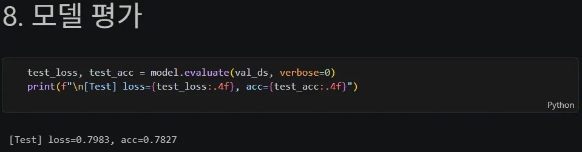
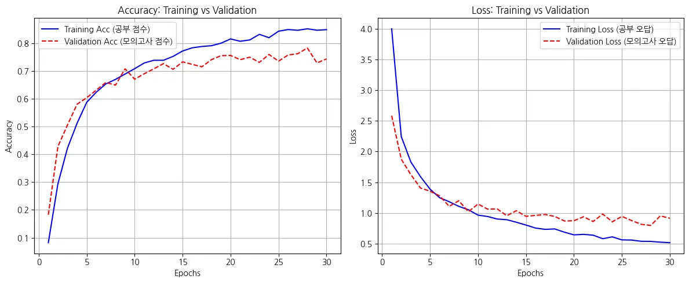

CoMNIST에서 알파 블렌딩이 필요한 가장 직접적인 이유는?
답을 고르면 바로 해설이 나타납니다.
Part 3 · CoMNIST Baseline
투명 배경의 알파벳을 흰 배경 흑백 이미지로 바꾸고, 두 개의 합성곱 블록으로 A부터 Z까지 분류합니다.
Route · S105–126
GPU 준비부터 제출 파일 생성까지, 셀을 건너뛰지 않고 베이스라인 한 바퀴를 따라갑니다.
학습·검증 분할 수 4,493장과 1,123장을 먼저 확인시키고, 알파 채널을 잃으면 글자와 배경이 모두 검게 해석될 수 있다는 실패 사례를 강조합니다.
Code 01 / 21
cuda_malloc_async는 메모리 단편화를 줄이고, memory growth는 여러 사용자가 GPU를 공유할 때 필요한 만큼만 점진적으로 할당하게 합니다.
Code 02 / 21
운영체제·난수·배열·TensorFlow·그래프에 필요한 모듈을 먼저 불러옵니다.
Code 03 / 21
Python, NumPy, TensorFlow의 난수 시드를 함께 고정해 같은 실험을 비교할 수 있게 합니다.
Code 04 / 21
CoMNIST 한 장은 278×278이며 배치 크기는 32입니다.
Code 05 / 21
현업 데이터는 CSV와 이미지 폴더의 조합으로 자주 제공됩니다. head()로 파일명과 라벨 구조를 먼저 확인합니다.
Code 06 / 21
학습 이미지 폴더와 테스트 이미지 폴더의 경로를 나누어 둡니다.
Code 07 / 21
폴더 이름을 26개 클래스로 읽고 전체 5,616장 중 80%인 4,493장을 학습용으로 나눕니다. RGBA의 알파 채널도 함께 불러옵니다.
Code 08 / 21
같은 시드와 분할 비율로 나머지 20%인 1,123장을 검증용으로 고정합니다.
Code 09 / 21
map()을 적용하면 class_names 속성이 사라지므로 클래스 이름과 개수를 먼저 백업합니다.
Code 10 / 21
한 장을 0~1로 정규화하고 RGBA를 분리한 뒤 알파 블렌딩으로 투명 배경을 흰색에 합성하고 1채널 흑백으로 바꿉니다. PNG의 투명 배경을 그대로 읽으면 배경이 검정으로 해석될 수 있습니다.
Code 11 / 21
변환 함수를 모든 배치에 지연 적용합니다. cache()는 첫 epoch의 결과를 재사용하고 prefetch()는 GPU 학습 중 다음 배치를 준비합니다.
Code 12 / 21
글씨와 라벨이 맞는지, 흰 배경·검은 글씨로 처리되었는지, 비정상적으로 회전하거나 찌그러진 표본이 없는지 확인합니다.
Code 13 / 21
회전과 확대·축소를 학습 중에만 적용해 글자 모양의 작은 차이에 대응합니다.
Code 14 / 21
278×278×1 입력에 두 개의 합성곱 블록을 통과시킨 뒤 펼쳐 26개 알파벳 확률을 출력합니다.
Compare · S118
| 차이점 | MNIST_CNN | CoMNIST_CNN |
|---|---|---|
| 입력크기 | (28, 28) | (278, 278, 1) |
| Conv2D 블록 | 1개에 필터 32개 | 2개에 필터 64개로 점점 깊어짐 |
| 출력층 크기 | 10 | 26 |
Code 15 / 21
26개 클래스의 정수 라벨에 맞춰 sparse categorical crossentropy와 accuracy를 사용합니다.
Code 16 / 21
모델 요약은 각 층의 출력 모양과 총 39,024,410개 파라미터를 확인하는 별도 셀입니다.
Code 17 / 21
검증 손실이 5 epoch 동안 좋아지지 않으면 멈추고 가장 좋았던 가중치로 되돌립니다.
Code 18 / 21
학습·검증 데이터를 연결하고 EarlyStopping을 적용해 최대 30 epoch 동안 학습 시간을 측정합니다.
Code 19 / 21

검증 데이터에서 손실과 정확도를 계산합니다.
Code 20 / 21

학습·검증 정확도와 손실을 나란히 그려 일반화 간격을 읽습니다.
Code 21 / 21
테스트 CSV 순서를 보존해 같은 전처리를 적용하고, 26개 확률의 최댓값을 A~Z 라벨로 되돌려 제출 파일을 만듭니다.
Quick Check
답을 고르면 바로 해설이 나타납니다.
답을 고르면 바로 해설이 나타납니다.